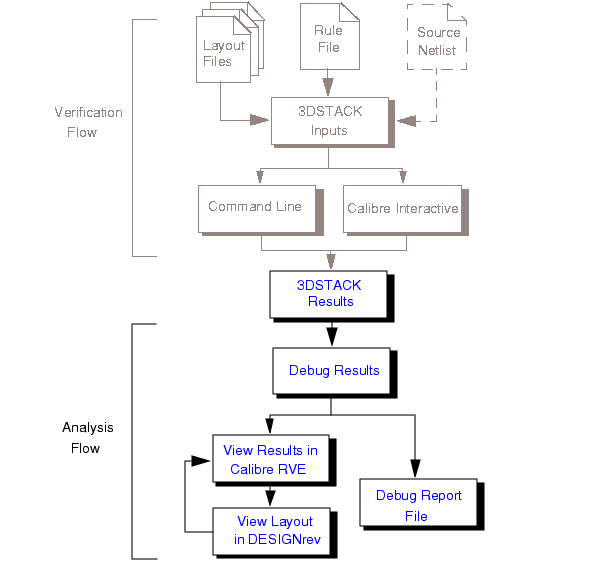

You
can view and analyze verification results produced by Calibre 3DSTACK
using a combination of Calibre RVE and Calibre DESIGNrev. Reports
in text format are also available after a run.
The typical
Calibre 3DSTACK results analysis flow is highlighted in the following
figure:
Calibre 3DSTACK Analysis
Flow